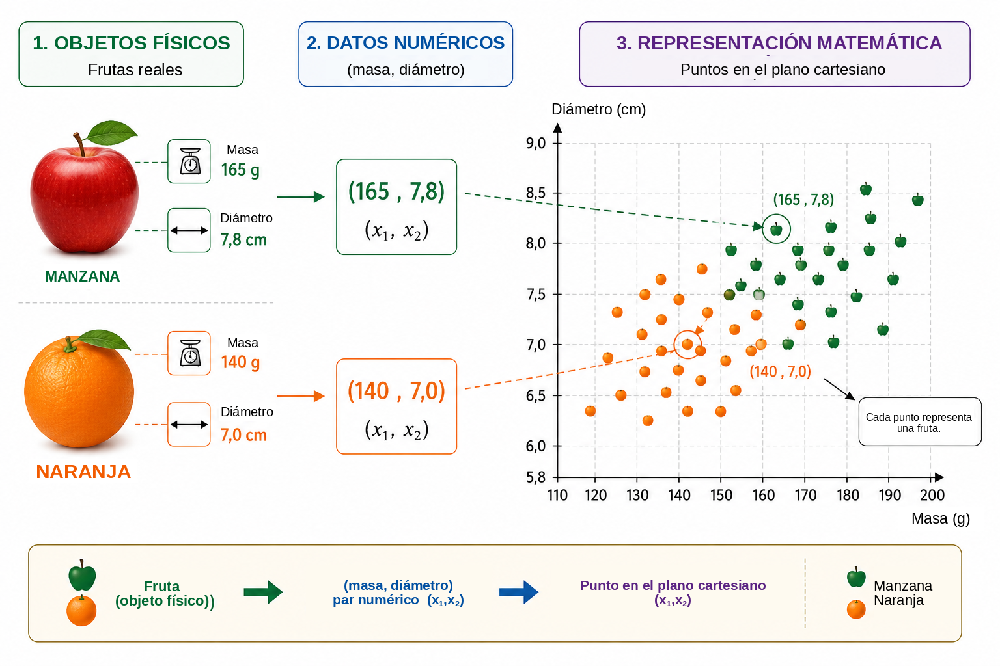
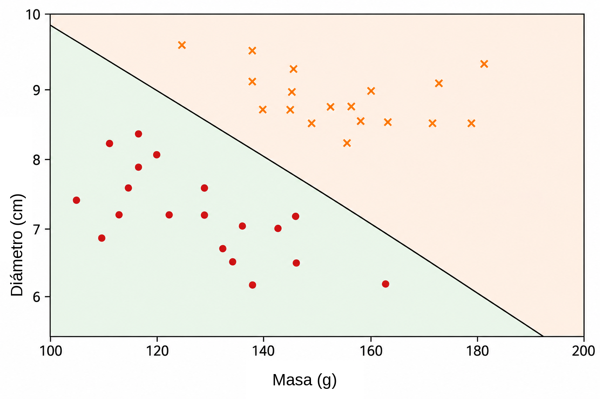
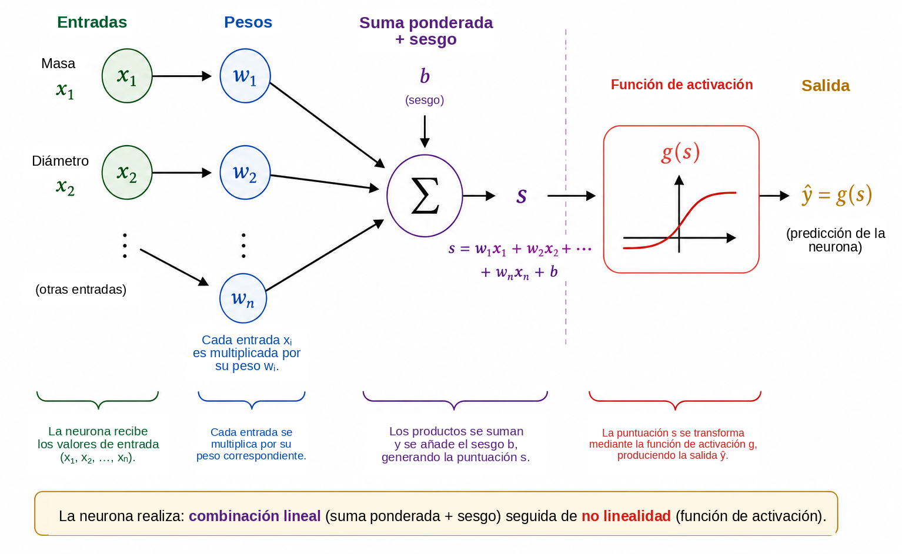
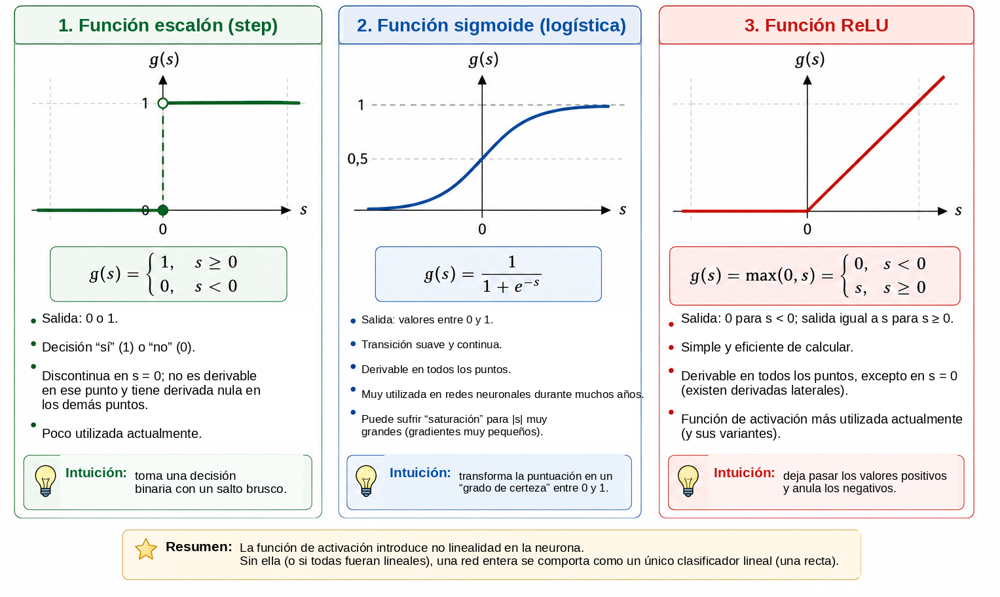
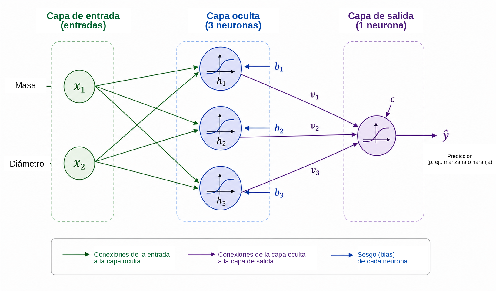
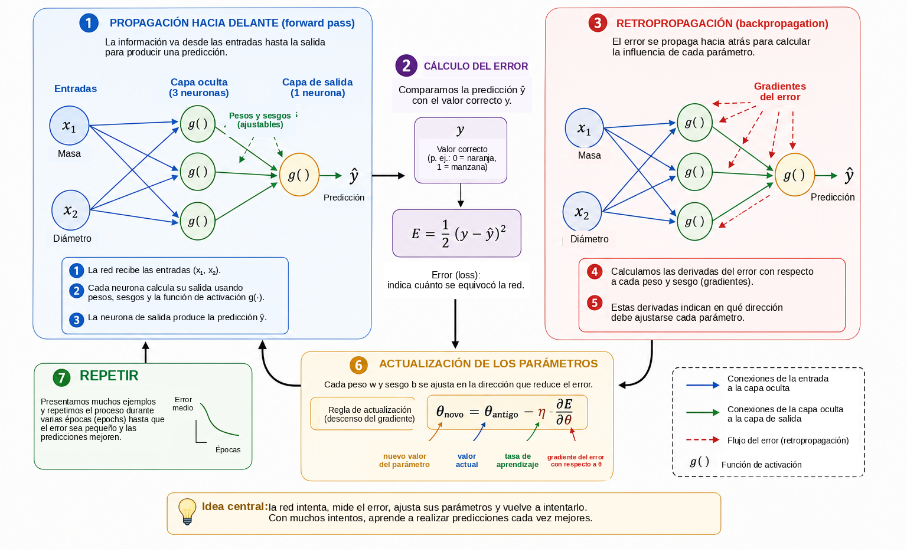
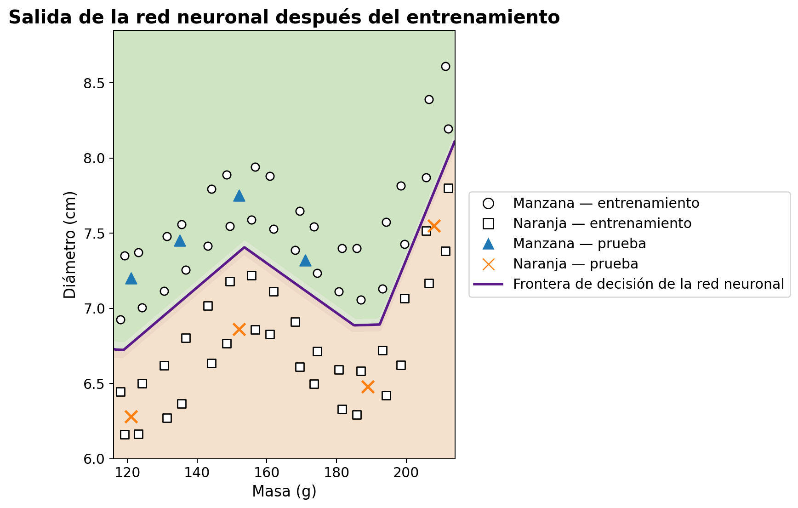

¿Cuándo puede aprender una computadora?
En la vida cotidiana tomamos decisiones de clasificación casi sin darnos cuenta. Al observar una fruta, la identificamos rápidamente como una manzana o una naranja; cuando llega un mensaje al teléfono, distinguimos una conversación legítima de publicidad no deseada; en un análisis médico, varias mediciones pueden combinarse para apoyar una decisión; y, en las instituciones financieras, se evalúan múltiples datos antes de conceder un crédito. En todos estos ejemplos, varias características se consideran conjuntamente para producir una respuesta.
En muchos programas informáticos tradicionales, las reglas que producen esa respuesta son escritas explícitamente por el programador. Este enfoque funciona bien cuando las reglas son conocidas y pueden formularse con claridad. Se vuelve menos eficaz cuando los datos son muy variables o cuando resulta difícil establecer de antemano todas las condiciones necesarias para una buena decisión. Esto conduce a una pregunta natural:
¿Podemos construir un programa que aprenda una regla de decisión
a partir de
ejemplos, en lugar de recibir la regla de antemano?
Esta es una de las ideas centrales del aprendizaje automático, un área de la inteligencia artificial dedicada a métodos que ajustan modelos a partir de datos . En un problema de aprendizaje supervisado, el algoritmo recibe ejemplos junto con sus respuestas correctas, y buscamos un modelo capaz de realizar predicciones útiles también para casos que no se utilizaron durante el entrenamiento. Entre los numerosos modelos desarrollados con este propósito, las redes neuronales artificiales han adquirido importancia en aplicaciones como el reconocimiento de imágenes, el procesamiento del lenguaje, el análisis de señales y la predicción de series temporales .
El uso de las redes neuronales como puente entre las matemáticas, la computación y la enseñanza escolar ya fue discutido en Professor de Matemática Online por Batista y Martins , quienes presentan una actividad que involucra formación docente, Python y reconocimiento de dígitos. El presente artículo sigue una vía complementaria. Nuestro objetivo principal es exponer la matemática interna de una pequeña red neuronal, comenzando por la geometría analítica y avanzando paso a paso hasta el cálculo de gradientes y una implementación manual de la retropropagación.
A pesar de la sofisticación de las aplicaciones modernas, el núcleo matemático de una red neuronal puede introducirse mediante ideas relativamente familiares. En un nivel básico, una red neuronal es una composición de funciones cuyos parámetros se ajustan a partir de datos. Comenzamos con un problema geométrico sencillo, reinterpretamos una recta separadora como una neurona artificial, conectamos varias neuronas, estudiamos el papel de las funciones de activación y mostramos cómo las derivadas pueden utilizarse para ajustar automáticamente los parámetros de la red. Finalmente, implementamos en Python un ejemplo pequeño pero completo, manteniendo una correspondencia directa entre las ecuaciones y el código.
Representación matemática del problema
Para comprender cómo funciona una red neuronal, comenzamos con un problema deliberadamente sencillo: distinguir manzanas de naranjas. Una fruta posee muchas características que podrían ser útiles para esta tarea, como el color, la masa, el diámetro, la textura y el aroma. Sin embargo, un modelo matemático inicial no necesita incluir toda esa complejidad. Utilizaremos únicamente dos cantidades fáciles de medir: la masa, en gramos, y el diámetro, en centímetros.
Por lo tanto, cada fruta se representará mediante un par ordenado \[(x_1,x_2),\] donde \[x_1=\text{masa} \qquad\text{y}\qquad x_2=\text{diámetro}.\]
Así, el par \((155,\;7.2)\) representa una fruta con masa de \(155\) g y diámetro de \(7.2\) cm. Al sustituir el objeto físico por dos mediciones numéricas, asociamos cada fruta con un punto del plano cartesiano: la primera coordenada indica su masa y la segunda su diámetro. La Figura 1 ilustra esta representación para un conjunto hipotético de manzanas y naranjas.

Esta transformación cambia la naturaleza aparente del problema. En lugar de preguntar directamente cómo reconocer una manzana o una naranja, podemos formular una pregunta geométrica: ¿cómo separar en el plano los puntos que pertenecen a las dos clases? Este cambio de perspectiva es fundamental en el aprendizaje automático. Las imágenes, los textos, los sonidos y las señales experimentales deben convertirse en representaciones numéricas antes de poder ser procesados por un algoritmo. En nuestro ejemplo, cada objeto tiene solo dos coordenadas; en aplicaciones reales, una representación puede contener cientos, miles o incluso millones de componentes. El principio es el mismo: cada ejemplo se asocia con una colección de números, y el modelo busca una regla que transforme esa representación en la respuesta deseada.
Comenzamos con la regla geométrica más sencilla disponible y preguntamos si una única recta puede separar adecuadamente los puntos correspondientes a las manzanas de los correspondientes a las naranjas.
Una recta como clasificador
Una vez que cada fruta ha sido representada por un punto del plano cartesiano, la clasificación se convierte en un problema geométrico: ¿puede una recta separar las manzanas de las naranjas? Esta pregunta recoge la idea básica de una importante familia de métodos de aprendizaje automático conocidos como clasificadores lineales.
Consideremos una recta que atraviesa la nube de datos, como se ilustra en la Figura 2. La recta divide el plano en dos semiplanos. Si la mayoría de los puntos de las manzanas se encuentran de un lado y la mayoría de los puntos de las naranjas del otro, la posición de una nueva fruta con respecto a la recta puede utilizarse como regla de clasificación. Después de medir su masa y su diámetro, representamos la fruta mediante un punto y determinamos en qué lado de la recta se encuentra dicho punto.

En el plano cartesiano \((x_1,x_2)\), una recta puede describirse mediante \[w_1x_1+w_2x_2+b=0, \qquad (w_1,w_2)\neq(0,0).\]
El vector \((w_1,w_2)\) es perpendicular a la recta y, por tanto, determina su orientación, mientras que el parámetro \(b\) contribuye a determinar su posición. Esta representación presenta una pequeña redundancia: multiplicar \(w_1\), \(w_2\) y \(b\) por una misma constante no nula produce exactamente la misma recta. En consecuencia, los parámetros que describen la frontera no son únicos. Su interpretación numérica también depende de la escala de las variables. Como la masa se mide en gramos y el diámetro en centímetros, los valores numéricos de \(w_1\) y \(w_2\) no deben compararse sin tener en cuenta las diferentes unidades.
La propia ecuación de la recta proporciona una forma sencilla de determinar de qué lado de la frontera se encuentra un punto. Definimos la puntuación \[s(x_1,x_2)=w_1x_1+w_2x_2+b.\]
Si \(s(x_1,x_2)=0\), el punto está sobre la recta. Si \(s(x_1,x_2)>0\), se encuentra en un semiplano; si \(s(x_1,x_2)<0\), se encuentra en el otro. Si decidimos que las puntuaciones positivas corresponden a manzanas y las negativas a naranjas, la regla se convierte en \[\begin{cases} s(x_1,x_2)\geq 0 & \Longrightarrow \text{manzana},\\ s(x_1,x_2)<0 & \Longrightarrow \text{naranja}. \end{cases}\]
Por ejemplo, consideremos la frontera definida por \[w_1=\frac{1}{10}, \qquad w_2=2, \qquad b=-30.\] Para una fruta con masa de \(160\) g y diámetro de \(7.8\) cm, \[\begin{aligned} s &=\frac{1}{10}\times160+2\times7.8-30\\ &=16+15.6-30\\ &=1.6. \end{aligned}\] Como la puntuación es positiva, el punto se encuentra en el semiplano que asociamos con las manzanas. Por lo tanto, este clasificador etiquetaría la fruta como una manzana.
No toda elección de \(w_1\), \(w_2\) y \(b\) produce una buena clasificación. Algunas rectas separan mal los dos grupos, mientras que otras cometen menos errores. El problema de aprendizaje consiste precisamente en utilizar ejemplos previamente etiquetados para determinar valores de los parámetros que reduzcan una medida del error del modelo. En lugar de programar directamente la posición de la recta, queremos que el algoritmo ajuste sus coeficientes a partir de los datos.
Una sola recta puede funcionar bien cuando las clases son aproximadamente separables linealmente. Conjuntos de datos más complejos pueden requerir una frontera no lineal. Antes de abordar esta limitación, reinterpretamos el clasificador que acabamos de construir como una unidad computacional elemental: una neurona artificial.
La neurona artificial
En la sección anterior, la expresión \[s=w_1x_1+w_2x_2+b\] se utilizó para determinar de qué lado de una recta se encuentra una fruta. La misma expresión puede considerarse como la primera etapa del cálculo realizado por una neurona artificial. Una neurona recibe entradas numéricas, las combina utilizando pesos y un sesgo, y después aplica una función matemática para obtener su salida.
En nuestro ejemplo, las entradas son la masa \(x_1\) y el diámetro \(x_2\). Cada entrada se multiplica por un parámetro llamado peso; los productos se suman junto con un término constante \(b\), llamado sesgo. La Figura 3 muestra esquemáticamente este cálculo.

Los pesos determinan cómo afectan a la puntuación los cambios en las entradas. Si \(x_2\) y todas las demás cantidades se mantienen fijas, una variación \(\Delta x_1\) modifica \(s\) en \(w_1\Delta x_1\). De forma análoga, una variación \(\Delta x_2\) modifica la puntuación en \(w_2\Delta x_2\). El signo también es importante: un peso positivo hace que un aumento de la entrada aumente la puntuación, mientras que un peso negativo produce el efecto contrario. Esta interpretación debe utilizarse con cuidado cuando las variables tienen unidades y escalas diferentes. Por esta razón, las implementaciones prácticas suelen normalizar o estandarizar los datos de entrada antes del entrenamiento.
El sesgo \(b\) es el término constante de la transformación afín. Geométricamente, permite desplazar la frontera de decisión. Si \(b=0\), la ecuación \[w_1x_1+w_2x_2=0\] obliga a la recta a pasar por el origen. Con un sesgo, la frontera puede desplazarse a otras posiciones. De forma equivalente, cuando \(x_1=x_2=0\), la puntuación es simplemente \(s=b\).
La puntuación no tiene por qué ser la salida final de la neurona. En general, se le aplica una función de activación \(g\): \[\widehat{y}=g(s)=g\left(w_1x_1+w_2x_2+b\right).\] Así, el cálculo tiene dos etapas, \[\begin{aligned} s &= w_1x_1+w_2x_2+b,\\[4pt] \widehat{y} &= g(s). \end{aligned}\]
Utilizando los valores de los parámetros de la sección anterior obtenemos \(s=1.6\). Si elegimos la función escalón \[g(s)= \begin{cases} 1, & s\geq0,\\ 0, & s<0, \end{cases}\] entonces \(\widehat{y}=g(1.6)=1\). Según nuestra convención, la fruta se clasifica como una manzana. Con esta activación, la decisión cambia cuando \(s\) cruza el cero, por lo que la frontera entre las clases es exactamente \[w_1x_1+w_2x_2+b=0.\]
Una única neurona es, por tanto, un objeto matemático sencillo con parámetros ajustables. Su verdadera importancia surge al conectar muchas unidades de este tipo. Sin embargo, antes de construir una red, necesitamos comprender por qué la función de activación es esencial.
¿Por qué necesitamos una función de activación?
Una neurona calcula primero una puntuación mediante una transformación afín y solo después aplica una función de activación. Esta segunda etapa es esencial para que una red neuronal pueda representar relaciones complicadas. Para ver por qué, imaginemos una red en la que no se utilizan funciones de activación. Cada unidad tendría entonces la forma \[y=w_1x_1+w_2x_2+b.\]
Para una ilustración unidimensional, supongamos que una primera unidad produce \[h=ax+b\] y una segunda calcula \[y=ch+d.\] La sustitución da \[y=c(ax+b)+d=acx+(cb+d),\] que sigue siendo una función afín de \(x\). La misma afirmación es válida en varias dimensiones: una composición de transformaciones afines sigue siendo afín. Por lo tanto, añadir muchas capas sin una operación no lineal no hace que la red sea fundamentalmente más expresiva; toda la composición podría sustituirse por una única transformación afín.
Una función de activación rompe esta limitación. Después de calcular la puntuación \(s\), la neurona aplica un mapa, normalmente no lineal, \[h=g(s).\] Cuando se conectan varias unidades de este tipo, la composición resultante ya no puede reducirse a una sola transformación afín. Esto permite que la red construya fronteras de decisión más complejas.
La activación más sencilla es la función escalón, \[g(s)= \begin{cases} 1, & s\geq0,\\ 0, & s<0. \end{cases}\] Produce una decisión binaria y es muy útil para comprender la clasificación. Sin embargo, su derivada es cero para \(s\neq0\) y no está definida en \(s=0\). Como el entrenamiento basado en gradientes utiliza derivadas para determinar cómo deben cambiar los parámetros, la función escalón no es adecuada para ese mecanismo de entrenamiento.
Una alternativa es la función sigmoide, \[\sigma(s)=\frac{1}{1+e^{-s}}.\] Transforma todo número real en un valor estrictamente comprendido entre \(0\) y \(1\). Para valores muy negativos de \(s\), la salida se aproxima a \(0\); para valores muy positivos, se aproxima a \(1\); entre ambos extremos, la transición es suave. La sigmoide es diferenciable en todo punto y \[\sigma'(s)=\sigma(s)\bigl(1-\sigma(s)\bigr).\] Como sus salidas se encuentran entre \(0\) y \(1\), se utiliza con frecuencia en la capa de salida de un clasificador binario. Bajo una formulación probabilística y con una función de pérdida adecuada, la salida puede interpretarse como una estimación de la probabilidad de la clase representada por \(1\). Sin embargo, en las capas ocultas la sigmoide puede crear una dificultad: para entradas de gran magnitud, su derivada se vuelve muy pequeña, contribuyendo al problema del gradiente desvaneciente en redes profundas.
Una activación muy utilizada en las capas ocultas es ReLU (Rectified Linear Unit), \[\operatorname{ReLU}(s)=\max(0,s) = \begin{cases} 0, & s<0,\\ s, & s\geq0. \end{cases}\] Aunque está compuesta por dos tramos lineales, ReLU no es globalmente lineal. Su derivada es \(0\) para \(s<0\) y \(1\) para \(s>0\). En \(s=0\) la derivada usual no existe, y las implementaciones de software adoptan una convención para el gradiente. Para entradas positivas, la derivada no disminuye a medida que crece \(s\), evitando uno de los mecanismos de saturación de la sigmoide.
La Figura 4 compara visualmente estas tres activaciones: el salto abrupto de la función escalón, la transición suave de la sigmoide y el cambio de pendiente de ReLU.

Sus principales propiedades se resumen a continuación.
| Función | Salida | Derivada | Uso típico |
|---|---|---|---|
| Escalón | \(\{0,1\}\) | Cero para \(s\neq0\); no definida en \(s=0\) | Modelos históricos y ejemplos didácticos |
| Sigmoide | \((0,1)\) | Existe para todo \(s\) | Capa de salida en clasificación binaria |
| ReLU | \([0,\infty)\) | \(0\) para \(s<0\) y \(1\) para \(s>0\) | Capas ocultas |
Los detalles de estas funciones difieren, pero su papel conceptual común consiste en introducir no linealidad. Esa no linealidad es la que permite que la pequeña red de la sección siguiente represente relaciones que una sola recta no puede capturar.
Para los lectores que deseen profundizar, Haykin ofrece un tratamiento clásico de las redes neuronales, mientras que Goodfellow, Bengio y Courville analizan las funciones de activación y el entrenamiento de redes profundas en un contexto más amplio. El texto de Nielsen, disponible gratuitamente , resulta especialmente accesible para desarrollar intuición sobre neuronas, activaciones y aprendizaje.
Construcción de una pequeña red neuronal
Consideramos ahora una red con dos entradas, una capa oculta que contiene tres neuronas y una neurona de salida. Las entradas siguen siendo \[x_1=\text{masa}, \qquad x_2=\text{diámetro},\] y ambas se suministran a cada neurona oculta, como se muestra en la Figura 5.

Sean \(h_1\), \(h_2\) y \(h_3\) las salidas de la capa oculta. Cada neurona recibe las mismas dos entradas, pero tiene sus propios pesos y su propio sesgo: \[\begin{aligned} h_1&=g\left(w_{11}x_1+w_{12}x_2+b_1\right),\\[4pt] h_2&=g\left(w_{21}x_1+w_{22}x_2+b_2\right),\\[4pt] h_3&=g\left(w_{31}x_1+w_{32}x_2+b_3\right). \end{aligned}\]
Aunque las tres neuronas reciben la misma masa y el mismo diámetro, pueden producir respuestas diferentes porque sus parámetros son distintos. Durante el entrenamiento, esos parámetros se ajustan para que las activaciones intermedias resulten útiles para la clasificación.
Las tres cantidades \(h_1\), \(h_2\) y \(h_3\) se envían después a la neurona de salida, que calcula \[s_{\mathrm{out}}=v_1h_1+v_2h_2+v_3h_3+c\] y produce \[\widehat{y}=g_{\mathrm{out}}\left(s_{\mathrm{out}}\right).\] Para nuestro problema binario, utilizamos una salida sigmoide: \[\widehat{y}=\sigma\left(v_1h_1+v_2h_2+v_3h_3+c\right), \qquad 0<\widehat{y}<1.\]
Utilizando \(y=1\) para manzana y \(y=0\) para naranja, un umbral de \(0.5\) proporciona la decisión de clase \[\widehat{y}\geq0.5 \Longrightarrow \text{manzana}, \qquad \widehat{y}<0.5 \Longrightarrow \text{naranja}.\] Por tanto, los valores próximos a \(1\) se asocian fuertemente con las manzanas, mientras que los valores próximos a \(0\) se asocian con las naranjas. Como se señaló antes, interpretar numéricamente \(\widehat{y}\) como una probabilidad requiere hipótesis adicionales sobre el modelo y su entrenamiento. Para la regla de clasificación utilizada aquí, basta considerar \(\widehat{y}\) como una salida continua de la red.
La característica central de esta arquitectura es la representación intermedia \[(x_1,x_2) \longrightarrow (h_1,h_2,h_3) \longrightarrow \widehat{y}.\] La red recibe dos características y construye tres nuevas cantidades antes de producir la respuesta final. Estas activaciones no se eligen manualmente: dependen de los pesos y sesgos y, por tanto, cambian a medida que se entrenan los parámetros.
A pesar de su pequeño tamaño, la red ya posee trece parámetros ajustables. Las tres neuronas ocultas contienen \[3(2+1)=9\] parámetros, y la neurona de salida aporta \[3+1=4.\] Por lo tanto, \[9+4=13.\]
El mismo recuento resulta transparente en notación matricial. Definimos \[\mathbf{x}= \begin{bmatrix} x_1\\x_2 \end{bmatrix}, \qquad W^{(1)}= \begin{bmatrix} w_{11}&w_{12}\\ w_{21}&w_{22}\\ w_{31}&w_{32} \end{bmatrix}, \qquad \mathbf{b}^{(1)}= \begin{bmatrix} b_1\\b_2\\b_3 \end{bmatrix}.\] Entonces, la capa oculta puede escribirse de forma compacta como \[\mathbf{h}=g\left(W^{(1)}\mathbf{x}+\mathbf{b}^{(1)}\right),\] donde \(g\) actúa componente a componente. Para la salida, \[\widehat{y} = \sigma\left(W^{(2)}\mathbf{h}+b^{(2)}\right),\] con \[W^{(2)}= \begin{bmatrix} v_1&v_2&v_3 \end{bmatrix}.\]
Esta notación anticipa la estructura que aparecerá en el programa en Python. Cuando presentamos una fruta en la entrada y calculamos las activaciones sucesivas hasta obtener \(\widehat{y}\), realizamos una propagación hacia delante o un paso hacia delante. La pregunta central permanece: ¿cómo pueden determinarse automáticamente los trece parámetros para que las predicciones se ajusten a los datos?
¿Cómo aprende una red neuronal?
Los pesos y los sesgos no se conocen de antemano. Deben ajustarse utilizando ejemplos para los que se dispone de la respuesta correcta. Este proceso se denomina entrenamiento y puede resumirse mediante el ciclo \[\boxed{\text{predecir}} \longrightarrow \boxed{\text{medir el error}} \longrightarrow \boxed{\text{ajustar los parámetros}} \longrightarrow \boxed{\text{repetir}}.\]
Consideremos una fruta con masa de \(140\) g y diámetro de \(7.0\) cm cuya clase correcta es naranja, de modo que \(y=0\). Supongamos que, en cierto momento del entrenamiento, la red produce \(\widehat{y}=0.80\). Una medida sencilla de la discrepancia entre la predicción y el valor objetivo es el error cuadrático \[E=\frac{1}{2}\left(y-\widehat{y}\right)^2.\] Para este ejemplo, \[E=\frac{1}{2}(0-0.80)^2=0.32.\]
Esta expresión es una función de pérdida para un ejemplo. Como es un cuadrado, \(E\geq0\), y las predicciones más alejadas del objetivo reciben penalizaciones mayores. El factor \(1/2\) no modifica la posición del mínimo, pero simplifica las derivadas. En clasificación binaria se utilizan con frecuencia otras pérdidas, especialmente la entropía cruzada. Aquí empleamos el error cuadrático porque su álgebra es transparente y resulta suficiente para introducir la optimización y la retropropagación .
Si el conjunto de entrenamiento contiene \(N\) ejemplos, una medida global es la pérdida media \[J=\frac{1}{N}\sum_{i=1}^{N}E_i.\] Cada predicción depende de los pesos y sesgos de la red, por lo que \(J\) también depende de todos esos parámetros. Entrenar significa buscar valores de los parámetros que hagan pequeña a \(J\).
Para comprender el mecanismo de ajuste, imaginemos primero que todos los parámetros, salvo un único peso \(w\), se mantienen fijos. Podemos entonces considerar la pérdida como una función \(J=J(w)\). La Figura 6 resume las etapas básicas del entrenamiento que examinaremos a continuación.

Para los lectores con poca formación en cálculo, una derivada puede interpretarse aquí como una medida de sensibilidad local: indica cómo un pequeño cambio en un parámetro tiende a modificar la pérdida. Su signo señala qué dirección aumenta o disminuye localmente la función, mientras que su magnitud mide la intensidad de esa variación local.
La derivada \[\frac{\partial J}{\partial w}\] proporciona la pendiente local. Si es positiva, un pequeño aumento de \(w\) tiende a aumentar \(J\), por lo que el peso debe desplazarse en la dirección opuesta. Si es negativa, aumentar \(w\) tiende localmente a disminuir \(J\). Ambos casos se describen mediante \[w_{\mathrm{new}} = w_{\mathrm{old}} - \eta\frac{\partial J}{\partial w},\] que constituye la idea básica del descenso del gradiente. El número positivo \(\eta\) es la tasa de aprendizaje; controla el tamaño del paso. Un valor muy pequeño puede hacer que el entrenamiento sea lento, mientras que un valor excesivamente grande puede provocar oscilaciones o inestabilidad.
Para una red con muchos parámetros, sea \(\theta\) cualquier peso o sesgo. La actualización se convierte en \[\theta_{\mathrm{new}} = \theta_{\mathrm{old}} - \eta\frac{\partial J}{\partial\theta}.\] El conjunto de todas las derivadas parciales forma el gradiente de la pérdida. Geométricamente, el gradiente apunta en la dirección de máximo crecimiento local, por lo que el gradiente negativo proporciona una dirección local de descenso.
Todavía necesitamos calcular estas derivadas cuando la red es una composición de varias funciones. Durante el paso hacia delante, la información viaja como \[\text{entradas} \longrightarrow \text{capa oculta} \longrightarrow \text{salida}.\] Para determinar cómo un parámetro de una capa inicial afecta a la pérdida, seguimos matemáticamente la cadena de dependencias en sentido inverso. Este procedimiento se denomina retropropagación. En esencia, es una aplicación sistemática y eficiente de la regla de la cadena. Rumelhart, Hinton y Williams constituyen una referencia clásica sobre la popularización de este procedimiento en redes con capas ocultas; Nielsen ofrece una derivación detallada y especialmente didáctica.
Para una cadena sencilla de dependencias en la que \(E\) depende de \(\widehat{y}\), que depende de una activación \(h\), que a su vez depende de un peso \(w\), la regla de la cadena da \[\frac{\partial E}{\partial w} = \frac{\partial E}{\partial\widehat{y}} \, \frac{\partial\widehat{y}}{\partial h} \, \frac{\partial h}{\partial w}.\] Cada factor describe una etapa de la influencia de \(w\) sobre la pérdida final. Las redes mayores contienen muchas cadenas de este tipo, y la retropropagación organiza el cálculo para que las derivadas intermedias puedan reutilizarse en lugar de recalcularse por separado para cada parámetro.
En la práctica, el entrenamiento utiliza muchos ejemplos. Un recorrido completo por el conjunto de entrenamiento se denomina una época. Los parámetros pueden actualizarse después de cada ejemplo, como en el programa didáctico utilizado más adelante en este artículo, o después de pequeños grupos de ejemplos llamados minilotes, algo habitual en redes de mayor tamaño. En ambos casos, el ciclo de predicciones, pérdidas, gradientes y actualizaciones se repite durante muchas épocas.
Una forma concreta de visualizar esta evolución consiste en seguir la predicción para un mismo ejemplo fijo en distintas etapas del entrenamiento. Consideremos de nuevo la fruta con masa de \(140\) g y diámetro de \(7.0\) cm, cuya clase correcta es naranja. La Tabla 1 muestra una progresión hipotética. Estos valores no corresponden a una ejecución particular; solo ilustran el mecanismo.
| Época | Predicción \(\widehat{y}\) | Pérdida \(E\) | Clasificación |
|---|---|---|---|
| 1 | 0.86 | 0.37 | Manzana |
| 5 | 0.71 | 0.25 | Manzana |
| 10 | 0.55 | 0.15 | Manzana |
| 20 | 0.31 | 0.05 | Naranja |
| 40 | 0.09 | 0.004 | Naranja |
Al comienzo, la salida está próxima a \(1\) y la fruta se clasifica incorrectamente como manzana. A medida que se ajustan los parámetros, la predicción disminuye y finalmente cruza el umbral \(0.5\), produciendo la clase correcta. Lo que cambia durante este proceso son los valores numéricos de los pesos y sesgos; la arquitectura de la red permanece fija.
Reducir la pérdida en los datos de entrenamiento no es el objetivo final. Una red útil debe realizar buenas predicciones también para ejemplos que no se utilizaron para ajustar los parámetros. Esta capacidad se denomina generalización. Cuando un modelo se adapta demasiado estrechamente a particularidades del conjunto de entrenamiento y funciona peor con datos nuevos, se produce sobreajuste. En evaluaciones más cuidadosas, los datos suelen dividirse en conjuntos de entrenamiento, validación y prueba: el primero ajusta los parámetros, el segundo apoya las decisiones tomadas durante el desarrollo del modelo y el tercero se reserva para la evaluación final. Se pueden encontrar discusiones más amplias sobre generalización y evaluación de modelos en Faceli et al. y Goodfellow, Bengio y Courville .
Hemos llegado, por tanto, al significado matemático del aprendizaje en una red neuronal. En este contexto, aprender significa ajustar los parámetros de una función compuesta de manera que se reduzca una medida de error sobre los datos y, idealmente, se generalice a nuevos ejemplos. La red predice, calcula una pérdida, utiliza derivadas para determinar cómo influyen sus parámetros sobre esa pérdida y realiza una secuencia de pequeñas correcciones.
De las matemáticas a Python
Pasamos ahora de las ecuaciones a un programa ejecutable. El
propósito no es utilizar una biblioteca especializada en redes
neuronales, sino implementar directamente, con NumPy, las
operaciones matemáticas desarrolladas a lo largo del artículo . Esto permite
observar, línea por línea, cómo aparecen en el código las combinaciones
lineales, las funciones de activación, el cálculo de la pérdida, la
retropropagación y el descenso del gradiente.
Para obtener un ejemplo final más convincente, utilizamos un conjunto de datos sintético distribuido sobre un dominio masa–diámetro más amplio. Seguimos trabajando únicamente con dos características físicas — masa en gramos y diámetro en centímetros —, pero ahora distribuimos \(64\) ejemplos de entrenamiento por una región extensa del plano y reservamos ocho ejemplos adicionales para una prueba ilustrativa. Los datos siguen siendo sintéticos y se mantienen dentro de intervalos plausibles para manzanas y naranjas. Se construyen para producir una frontera de decisión no lineal sin concentrar todos los puntos en unos pocos grupos excesivamente artificiales.
La idea geométrica es sencilla. Definimos una curva de referencia en el plano masa–diámetro, situamos las manzanas en dos bandas por encima de esa curva y las naranjas en dos bandas por debajo. Se añaden pequeñas perturbaciones deterministas tanto a la masa como al diámetro para que las observaciones ocupen una región más amplia. El ejemplo resultante es más rico que las ilustraciones anteriores: contiene más puntos, los datos están distribuidos por el dominio y la frontera de decisión adecuada es claramente más curva que una recta.
Para este experimento computacional final, ampliamos la capa oculta a doce neuronas ReLU. Esto no modifica la estructura conceptual estudiada en las secciones anteriores; únicamente aumenta la capacidad de la red para representar una frontera más elaborada. En lugar de los \(13\) parámetros de la red pedagógica de tres neuronas, ahora tenemos \(49\) parámetros ajustables: \(24\) pesos y \(12\) sesgos en la primera capa, seguidos de \(12\) pesos y un sesgo en la capa de salida. Las ecuaciones conservan exactamente la misma forma; solo aumentan el tamaño de los vectores y las matrices.
El programa completo se muestra a continuación.
import numpy as np
import matplotlib.pyplot as plt
from matplotlib.lines import Line2D
def relu(s):
return np.maximum(0, s)
def relu_derivative(s):
return (s > 0).astype(float)
def sigmoid(s):
return 1 / (1 + np.exp(-s))
def base_boundary(m):
return 6.68 + 0.74*np.exp(-((m-155)/20)**2) \
+ 1.50/(1 + np.exp(-(m-202)/5))
def build_data():
masses_1 = np.linspace(118, 212, 16)
masses_2 = masses_1 + np.array([
1.2,-1.1,0.8,-1.3,1.0,-0.8,1.1,-1.0,
1.3,-0.9,0.9,-1.2,1.0,-1.0,0.8,-0.7
])
k = np.arange(16)
a1 = np.column_stack([
masses_1,
base_boundary(masses_1) + 0.22 + 0.05*np.sin(0.8*k)
])
a2 = np.column_stack([
masses_2,
base_boundary(masses_2) + 0.58 + 0.06*np.cos(0.45*k)
])
o1 = np.column_stack([
masses_1,
base_boundary(masses_1) - (0.22 + 0.04*np.cos(0.7*k))
])
o2 = np.column_stack([
masses_2,
base_boundary(masses_2) - (0.55 + 0.05*np.sin(0.5*k))
])
X_train = np.vstack([a1, a2, o1, o2])
y_train = np.array([1.0]*32 + [0.0]*32)
X_test = np.array([
[121.0, 7.20], [135.0, 7.45],
[152.0, 7.75], [171.0, 7.32],
[121.0, 6.28], [152.0, 6.86],
[189.0, 6.48], [208.0, 7.55]
])
y_test = np.array([1,1,1,1,0,0,0,0], dtype=float)
return X_train, y_train, X_test, y_test
def predict(X, mean, std, W1, b1, W2, b2):
Xn = (X - mean) / std
outputs = []
for x in Xn:
h = relu(W1 @ x + b1)
y_hat = sigmoid(W2 @ h + b2)
outputs.append(y_hat)
return np.array(outputs)
X_train, y_train, X_test, y_test = build_data()
mean = X_train.mean(axis=0)
std = X_train.std(axis=0)
Xn = (X_train - mean) / std
rng = np.random.default_rng(42)
W1 = 0.1 * rng.standard_normal((12, 2))
b1 = np.zeros(12)
W2 = 0.1 * rng.standard_normal(12)
b2 = 0.0
eta = 0.05
n_epochs = 6000
history = []
for epoch in range(n_epochs):
for i in rng.permutation(len(Xn)):
x = Xn[i]
target = y_train[i]
z1 = W1 @ x + b1
h = relu(z1)
z2 = W2 @ h + b2
y_hat = sigmoid(z2)
delta2 = (y_hat - target) * y_hat * (1 - y_hat)
dW2 = delta2 * h
db2 = delta2
delta1 = (delta2 * W2) * relu_derivative(z1)
dW1 = np.outer(delta1, x)
db1 = delta1
W1 -= eta * dW1
b1 -= eta * db1
W2 -= eta * dW2
b2 -= eta * db2
errors = []
for x, target in zip(Xn, y_train):
h = relu(W1 @ x + b1)
y_hat = sigmoid(W2 @ h + b2)
errors.append(0.5 * (target - y_hat)**2)
history.append(np.mean(errors))
def make_figure():
masses = np.linspace(116, 214, 500)
diameters = np.linspace(6.0, 8.85, 500)
M, D = np.meshgrid(masses, diameters)
grid = np.column_stack([M.ravel(), D.ravel()])
P = predict(grid, mean, std, W1, b1, W2, b2).reshape(M.shape)
fig, ax = plt.subplots(figsize=(9.2, 6.3))
ax.contourf(
M, D, P,
levels=[0.0, 0.25, 0.50, 0.75, 1.0],
colors=["#f3e0cb", "#ecd5c4", "#dbe7cf", "#cde3bf"],
alpha=0.95
)
ax.contour(M, D, P, levels=[0.5],
colors=["#5a1a8a"], linewidths=2.2)
mask = y_train == 1.0
ax.scatter(X_train[mask,0], X_train[mask,1], marker="o",
s=48, facecolors="white", edgecolors="black",
linewidths=1.1, label="Manzana - entrenamiento")
mask = y_train == 0.0
ax.scatter(X_train[mask,0], X_train[mask,1], marker="s",
s=48, facecolors="white", edgecolors="black",
linewidths=1.1, label="Naranja - entrenamiento")
mask = y_test == 1.0
ax.scatter(X_test[mask,0], X_test[mask,1], marker="^",
s=92, color="#1f77b4", label="Manzana - prueba")
mask = y_test == 0.0
ax.scatter(X_test[mask,0], X_test[mask,1], marker="x",
s=110, color="#ff7f0e", linewidths=2.0,
label="Naranja - prueba")
ax.set_xlabel("Masa (g)")
ax.set_ylabel("Diámetro (cm)")
ax.set_title("Salida de la red neuronal después del entrenamiento")
handles = [
Line2D([0],[0], marker='o', markersize=9,
markerfacecolor='white', markeredgecolor='black',
linestyle='None', label='Manzana - entrenamiento'),
Line2D([0],[0], marker='s', markersize=9,
markerfacecolor='white', markeredgecolor='black',
linestyle='None', label='Naranja - entrenamiento'),
Line2D([0],[0], marker='^', markersize=9, color='#1f77b4',
linestyle='None', label='Manzana - prueba'),
Line2D([0],[0], marker='x', markersize=10, color='#ff7f0e',
linestyle='None', label='Naranja - prueba'),
Line2D([0],[0], color='#5a1a8a', lw=2.2,
label='Frontera de decisión de la red neuronal')
]
ax.legend(handles=handles, loc='center left',
bbox_to_anchor=(1.02, 0.5), frameon=True)
fig.tight_layout()
plt.show()Aunque el código es más largo que las primeras ecuaciones estudiadas
en el artículo, su estructura sigue siendo transparente. La función
build_data() genera automáticamente los \(64\) ejemplos de entrenamiento y los ocho
ejemplos ilustrativos de prueba. A continuación, estandarizamos ambas
variables de acuerdo con \[x_j^{\ast}=\frac{x_j-\mu_j}{\sigma_j},\]
donde \(\mu_j\) y \(\sigma_j\) se calculan únicamente a partir
del conjunto de entrenamiento. Esto evita que el conjunto de prueba
influya en el ajuste de los parámetros y, además, sitúa masa y diámetro
en escalas numéricas comparables.
El paso hacia delante no cambia en esencia. La única diferencia es que la primera capa produce ahora un vector de doce activaciones ocultas. En notación matricial, \[\mathbf{z}^{(1)}=W^{(1)}\mathbf{x}+\mathbf{b}^{(1)}, \qquad \mathbf{h}=\operatorname{ReLU}(\mathbf{z}^{(1)}),\] \[z^{(2)}=W^{(2)}\mathbf{h}+b^{(2)}, \qquad \widehat{y}=\sigma(z^{(2)}).\] Estas cuatro líneas siguen conteniendo el núcleo matemático del algoritmo. El entrenamiento también conserva la lógica introducida anteriormente: calcular una predicción, medir su error, propagar hacia atrás la información de sensibilidad mediante derivadas y actualizar los parámetros con pequeños pasos de descenso del gradiente.
En el código, la retropropagación en la capa de salida aparece en
delta2 = (y_hat - target) * y_hat * (1 - y_hat)y la propagación hacia la capa oculta aparece en
delta1 = (delta2 * W2) * relu_derivative(z1)seguida de las actualizaciones de todos los pesos y sesgos. Como los ejemplos se barajan en cada época y los parámetros se actualizan después de cada observación, esta implementación constituye una forma elemental de descenso estocástico del gradiente.
Con la semilla aleatoria y los hiperparámetros utilizados aquí, la pérdida media final es del orden de \(10^{-5}\) a \(10^{-4}\), y los \(64\) ejemplos de entrenamiento junto con los ocho ejemplos ilustrativos de prueba reciben la clasificación esperada. Esto no debe interpretarse como una evaluación estadística rigurosa del rendimiento: los datos son sintéticos y fueron construidos con fines pedagógicos. Su función es mostrar, en un escenario menos trivial, cómo una pequeña red neuronal puede aprender una frontera de decisión claramente no lineal.
La Figura 7 muestra la salida final del programa en el plano masa–diámetro. Se representan todos los puntos de entrenamiento. La curva destacada corresponde al nivel \(\widehat{y}=0.5\) y representa la frontera de decisión aprendida por la red; las regiones sombreadas indican las dos clases predichas. Los círculos representan manzanas de entrenamiento, los cuadrados naranjas de entrenamiento, los triángulos manzanas de prueba y las cruces naranjas de prueba. La leyenda se sitúa fuera de la región principal del gráfico para no ocultar ningún punto de datos.

Comenzamos con una recta que separaba dos grupos sencillos de puntos y terminamos con un ejemplo computacional más rico en el que surge una frontera curva a partir del ajuste automático de los parámetros de la red. No se ha añadido nada misterioso a las matemáticas: la implementación simplemente organiza y repite, a mayor escala y a gran velocidad, combinaciones afines, funciones de activación, derivadas, productos matriciales y actualizaciones por descenso del gradiente .
Todo el material computacional asociado con este artículo — incluido el código y un cuaderno ejecutable de Google Colab — está disponible en https://neuralmath.org, que proporciona un único punto de acceso para los lectores que deseen explorar, reproducir o adaptar los ejemplos.